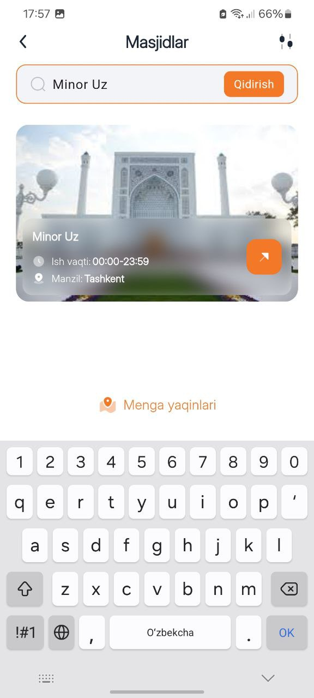
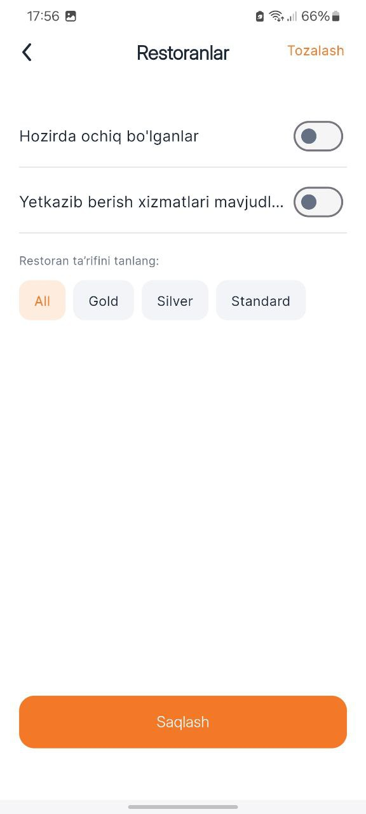
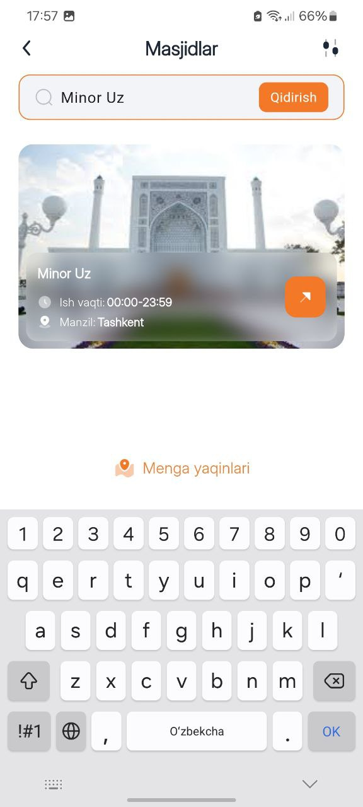
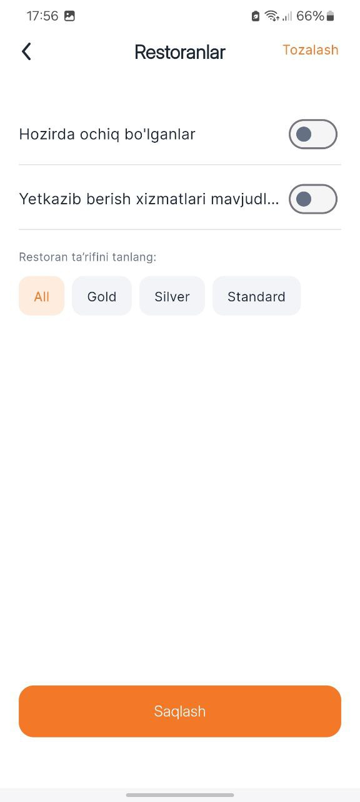

Discover, rate, share
with Robbi.uz
About Robbi.uz
Discover the Best of Uzbekistan with Robbi.uz
Welcome to Robbi.uz, the ultimate guide to finding and exploring the finest places and services across Uzbekistan. Whether you're searching for the best local restaurants, top-rated hotels, cozy cafés, bustling markets, or even essential services like hospitals and mosques, Robbi.uz has you covered. Our app is designed to make discovering hidden gems and reliable businesses easier than ever.
Why Robbi.uz?
Robbi.uz was created with a single mission in mind: to connect people with the best local businesses and services in Uzbekistan. We understand that whether you're a resident or a visitor, finding trustworthy and highly-rated places can be challenging. That’s where we come in. With Robbi.uz, you can explore a variety of categories, read real user reviews, and make informed decisions.
What you can do on Robbi.uz?
•Search for Restaurants: Explore a diverse
range of dining options, from local eateries to international cuisines.
View menus, read reviews, and find the best spots to satisfy your cravings.
•Rate and Review Businesses: Share your experiences by rating businesses and leaving
reviews to help others make informed choices.
•Explore Local Services: Find the nearest hospitals, clinics, mosques, and more.
Get directions, check working hours, and discover services that suit your needs.
•View Business Details: Get all the information you need, from locations and working
hours to contact details, ensuring you have everything at your fingertips.
Screenshots
 




Key Features
Find places near you
You can use our technology to find nearby locations, such as hotels, that are close to you.
Different tariffs
You can choose the tariff for the restaurant. You can select from these four options: Gold, Silver, Standard, or All at Once.
Contact the location
You can contact the business and the location you are searching for.
Download App